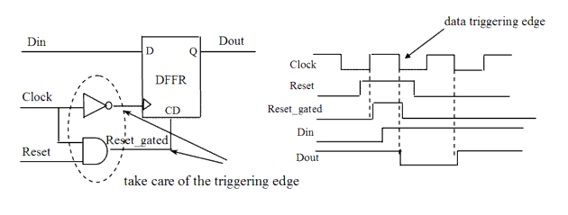

| Description | This rule fires when Leda detects a gated reset that is derived from the join of a clock and the output of a flip-flop triggered by such clock with an AND gate. When this reset is connected to another flip-flop using the same clock signal, it can cause a pulse at the output of the flip-flop. To avoid the pulse, make these two flip-flops sensitive to opposite edges of the clock. |
| Policy | DESIGN |
| Ruleset | RESETS |
| Language | VHDL/Verilog |
| Type | Hardware |
| Severity | Error |
This is an example of valid Verilog code, followed by a circuit diagram that illustrates the correct approach:
module ntl_rst17_top ;
...
always @(posedge Clock)
begin
if (Reset)
Reset_tri <= 0;
else Reset_tri <= Ctrl;
end
assign Reset_int = Reset_tri & Clock;
// Gated reset is active when flip-flop is posedge
always @(negedge Clock)
// OK -- flip-flop sensitive to opposite edge of clock
begin
if (Reset_int)
Dout <= 0;
else Dout <= Din;
end
endmodule
